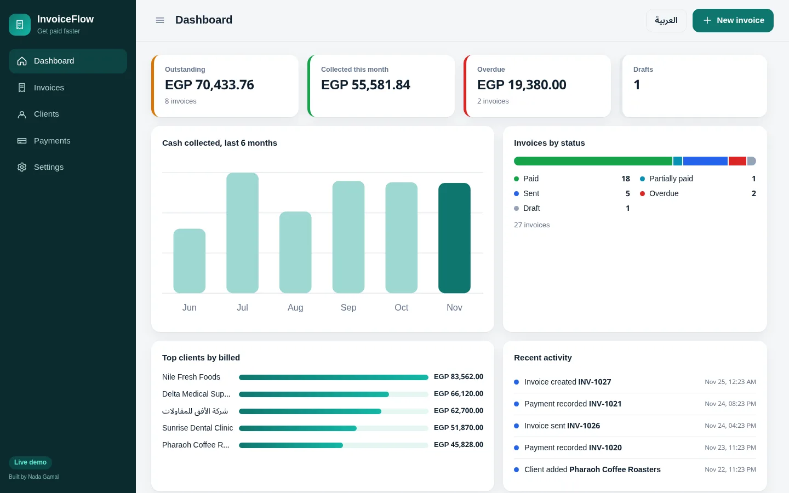
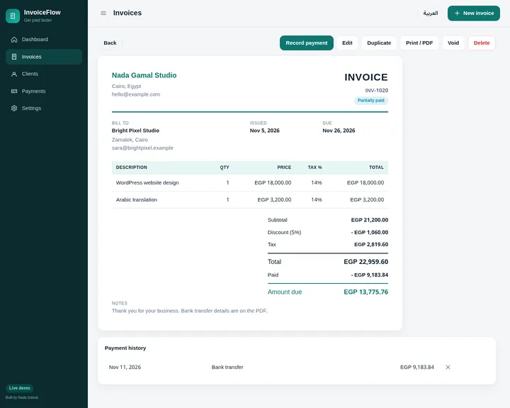
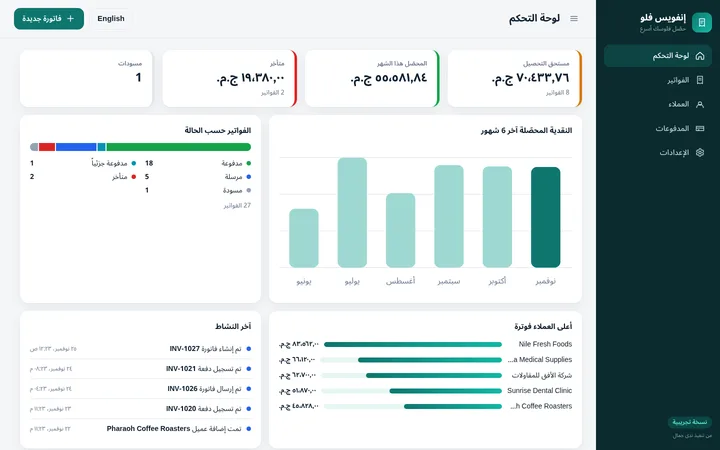
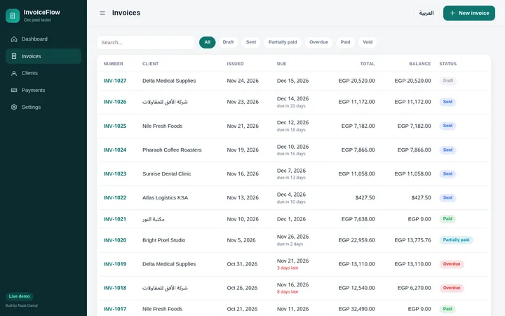
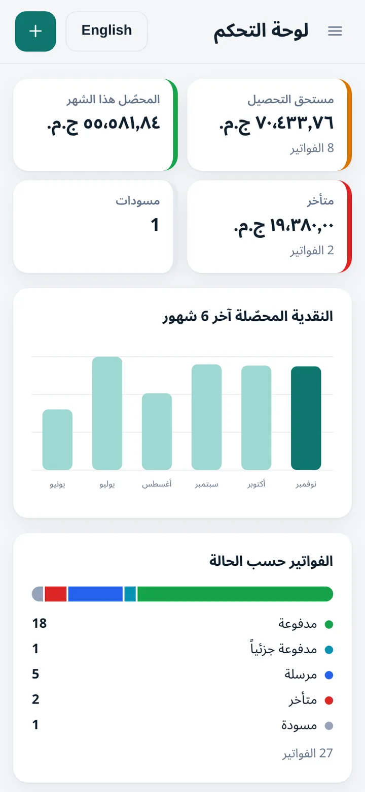

PORTFOLIO DEMO / BUILT / LIVE DEMO
InvoiceFlow
From invoice to paid.

ACTUAL BUILDInvoiceFlow · Dashboard. Seeded demo invoices.
The problem
A freelancer or small team needs to know who owes what, which invoices are late and what was collected this month, without a spreadsheet and in the client's language.
What was built
A dashboard with outstanding, collected, overdue and draft totals, a six-month cash chart and top clients. An invoice editor with line items, per-line tax, a discount and live totals in four currencies. Full and partial payments that move an invoice between Sent, Partially paid, Paid and Overdue by themselves. A client list with balances, and a print-ready invoice page. Everything exists in English and Arabic right to left, and the layout adapts to phones.
The approach
The business rules are pure functions, covered by tests: totals, status, numbering and validation. The server recalculates totals and status and never trusts values sent by the browser. The front end is plain ES modules with no build step, and every rendered value is escaped.
The result
A hosted demo you can use: add a client, create an invoice, record a partial payment, watch the status and dashboard change, and print the invoice. The repository, tests and screenshots sit alongside.
Evidence & production limits
The hosted demo is fully interactive, but it is a demo-grade setup. All visitors share one dataset stored in a Vercel Blob store, saved as a new version on every write (last writer wins, no locking). It resets to the seed data every 6 hours, and Settings has a reset button. A real product would use Postgres and sign-in.
Built / demo. All clients, invoices and amounts are synthetic. Sending an invoice only changes its status: no email is sent and no payment provider is connected. It does not produce Egyptian e-invoice or ZATCA documents. The repository README compares it honestly with FreshBooks, Zoho Invoice and Wave.
Next chapter
Sign-in with Postgres, emailed invoices and reminders, recurring invoices and e-invoicing formats would be the next implementation steps.
Inside the build
Open any preview to see the full capture. Captures show test or demonstration content. All records shown are demonstration content, not evidence of client use.



